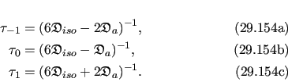
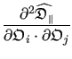
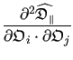
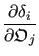
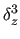
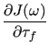
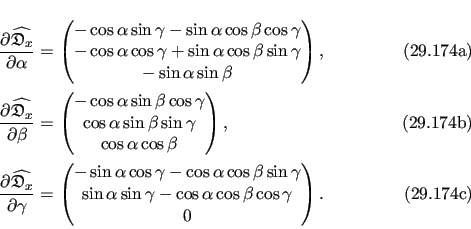

Next: The alternative extended model-free Up: Optimisation equations for the Previous: The extended model-free Hessian Contents Index
Because of the equation S2 = S2f⋅S2s and the form of the extended spectral density function (15.63) a convolution of the model-free space occurs if the model-free parameters {S2f, S2s, τf, τs} are optimised rather than the parameters {S2, S2f, τf, τs}. This convolution increases the complexity of the gradient. For completeness the first partial derivatives are presented below.
The partial derivative of (15.63) with respect to the geometric parameter
 is
is
The partial derivative of (15.63) with respect to the orientational parameter
 is
is
 =  +  +  |
(15.91) |
The partial derivative of (15.63) with respect to the order parameter S2f is
|  = |
(15.92) |
The partial derivative of (15.63) with respect to the order parameter S2s is
|  = |
(15.93) |
The partial derivative of (15.63) with respect to the correlation time τf is
|  = |
(15.94) |
The partial derivative of (15.63) with respect to the correlation time τs is
|  = |
(15.95) |
The relax user manual (PDF), created 2016-10-28.